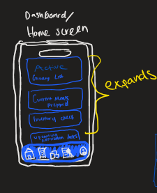
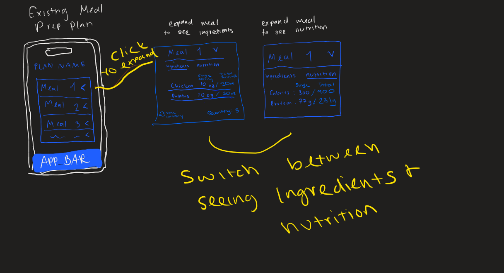
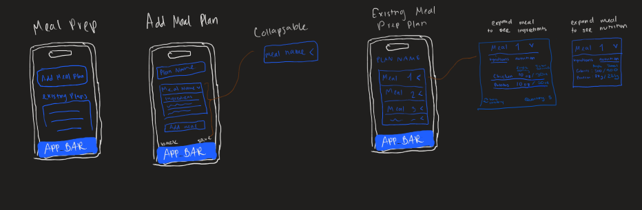

As I reflect on the journey of developing my unique UI project, I'm reminded of the singular path I embarked
on. This project was a solo endeavor, a testament to my dedication and vision. It was born out of a personal
need, an urge to blend the realms of fitness and technology in a seamless, intuitive way. The result? An
all-in-one grocery list, inventory tracker, and meal planning app, with a special focus on the meal planning
aspect.
The heart of this project lies in its ability to cater to the needs of gym enthusiasts and meal preppers
like myself. My days spent juggling macro calculations and grocery lists highlighted a gap in the market - a
gap I was uniquely positioned to fill. Why me? Because I live the life of my target audience, understanding
intimately the nuances and specifics of what they need in such an app.
I envisioned a UI that epitomized efficiency. Designed for the fast-paced lifestyle of its users, the app
not only tracks inventory but also assists in meal planning, all while calculating necessary nutritional
information. The user can simply increase the servings, and the app adeptly recalculates the macros - a
feature that's a true game-changer.
Choosing the mobile platform for this app was a no-brainer. The nature of the app demanded accessibility at
the fingertips, catering to users who need to make quick, informed decisions about their meals and nutrition
on the go.
The narrative that inspired this UI was deeply personal yet universally relatable - a story of
transformation. It centered around a college boy, driven by a heartbreak, who decides to take control of his
life through fitness and nutrition. This narrative shaped the UI, culminating in a design that's not just
functional but motivational.



In designing the system, I took pride in selecting modern, sleek fonts that are both attractive and easy to
read. The color palette was another area where I poured my creativity, choosing shades of blue for trust and
coolness, and vibrant orange to inject energy and positivity.
This is my prototype after the first round of revisions:
Feedback from my colleague was invaluable. Initially, they found the navigation confusing due to the
similarity of nested pages. This prompted me to enhance the page descriptions, adding clarity and
distinctiveness to each segment.
User testing was an eye-opener. I specifically chose gym-goers and meal preppers, including those
experienced in macro tracking apps. Their feedback led to several significant changes:
1. Visual Confusion: Differentiating the meal plan page and the meal page with different background images
improved
user experience.
2. Ambiguous Page Names: More descriptive names enhanced clarity and navigation ease.
3. User Guidance: Adding concise descriptions for each page provided better context and understanding.
4. Navigation Difficulties: Clear indications of button functionalities improved navigation flow.
5. Inconsistent Element Alignment: Standardizing alignment across screens elevated the overall visual
harmony.
6. Inadequate Visual Hierarchy: Introducing breadcrumbs enhanced navigational efficiency and
orientation.
Here is my prototype after the changes prompted by my user tests were implemented:
My design values of ambition and confidence shone through every aspect of the UI. The color choices and the
consistent, straightforward layout were not just about aesthetics but also about empowering users to take
control of their fitness and dietary journey with confidence and ease.
In essence, this project was a labor of love, a manifestation of my personal journey, and a tribute to those
on a similar path. It was a journey of learning, adapting, and ultimately, creating something that not only
served a purpose but also inspired and motivated.